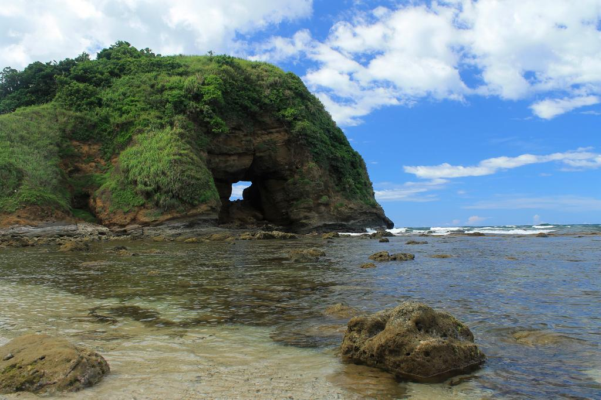

| Saud Beach in Pagudpud, Ilocos Norte, is a well-known and admired beach in the Philippines,
having been named one of the "25 Most Beautiful Beaches in the World." Despite its reputation,
it is not marketed and is frequently uncrowded, with tall coconut trees giving shade and crystal-clear water. |
 |
 |
|
| Patapat Viaduct is a 1.3-kilometer-long concrete bridge in Pagudpud, Ilocos Norte, Philippines.
It is the country's fourth-longest bridge and serves as an extension of the Maharlika Highway.
The bridge, located at the foot of the Northern Cordillera Mountain Ranges, provides breathtaking
views of the West Philippine Sea, Pasaleng Bay, and surrounding landscapes, making it a well-known landmark in Pagudpud. |
 |
|  |
Bantay Abot Cave, a unique arching rock formation, translates to "a mountain with a hole" and resembles a half donut
from a distance. Known as the female half of Lover's Rock, it's a popular stop on Pagudpud trips due to its distinctive
shape and position facing the West Philippine Sea. |